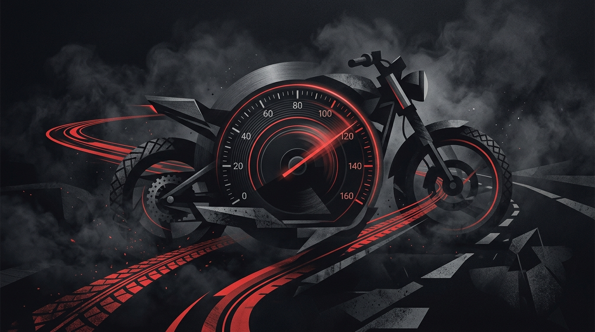
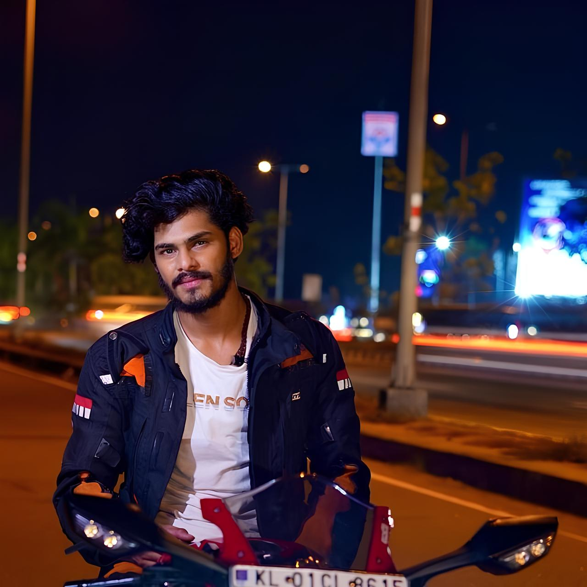

Biography & Career
The story of TTF Vasan (Vasanth Kumar) — from customizing two-wheelers in Coimbatore to pioneering Tamil motovlogging on Twin Throttlers.
Vasanth Kumar — The Mind Behind Twin Throttlers
TTF Vasan, popularly known as Vaikuntha Vasan, is a Tamil YouTuber, motovlogger, motorcycle enthusiast, and entertainer from Coimbatore, Tamil Nadu. His passion for motorcycles and interest in creating videos helped him turn his hobby into a career in digital content creation. Over time, he became a familiar personality among Tamil audiences.
He gained popularity through his YouTube channel, Twin Throttlers, where he shares motorcycle rides, superbike experiences, road trips, travel adventures, bike-related content, and moments from his personal life. His energetic content and connection with viewers helped him build a dedicated community known as the TTF Family.
Beyond YouTube, TTF Vasan has explored opportunities in cinema and television. He made his reported film debut with IPL (Indian Penal Law) and later gained further public attention through his appearance in Bigg Boss Tamil Season 10. From a motorcycle enthusiast and content creator to a film and television personality, his journey continues to attract attention among Tamil audiences.

Verified Motorcycle Fleet
The documented machines that powered TTF Vasan's most iconic road trips and channel milestones.

Yamaha R15 V3 "Jarvis"
The motorcycle that started it all. Heavily customized with custom fairings, exhaust modifications, and neon styling, Jarvis became a beloved mascot for the early Twin Throttlers community.

Cross-Country Tourer
The endurance machine that carried TTF Vasan across 3,500 km of challenging Indian terrain during his historic Coimbatore to Ladakh expedition.

Kawasaki Z900 & Suzuki Hayabusa
Representing major personal milestones, his transition to the inline-4 Kawasaki Z900 naked sport and the legendary Suzuki Hayabusa GSX-1300R superbike marked a new chapter of high-displacement content.
Documented Career Timeline
Chronological journey formatted year-to-year — sourced directly from Twin Throttlers channel history and public coverage.
Birth of Twin Throttlers & Jarvis Build
Founded the YouTube channel '@TwinThrottlers_TTF'. Gained immediate traction with his custom Yamaha R15 V3 'Jarvis' and high-octane motovlogging style in Tamil.
3,500 km Coimbatore to Ladakh Expedition
Executed the famous 3,500 km cross-country expedition from Coimbatore to Leh Ladakh. The multi-part episodic journey went viral, spawning the nationwide "TTF Family" fanbase.
Superbike Fleet Upgrades: Z900 & Hayabusa
Took delivery of the Kawasaki Z900 and fulfilled his lifelong ambition of acquiring the iconic Suzuki Hayabusa GSX-1300R superbike.
Circuit Training at RACR & Cinema Announcements
Enrolled at the Rajini Academy of Competitive Racing (RACR) to undergo formal track training, championing closed-circuit safety and announcing initial feature film acting ventures in Tamil cinema.
Marriage Celebration & Family Milestone
Married Prakashini and celebrated his wedding reception and first anniversary with the TTF Family, sharing personal milestones alongside lifestyle and touring content.
5.13M+ Channel Milestone
Twin Throttlers surpassed 5.13 million subscribers, with over 1.5 billion lifetime views and 1,800+ published videos, cementing its place among Tamil Nadu's largest moto-vlogging channels.
Bigg Boss Tamil 10 – Wildcard Entry & Television Spotlight
Entered Bigg Boss Tamil Season 10 as a wildcard contestant in October 2026, bringing his journey to mainstream television audiences nationwide.